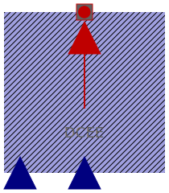

| Name | Description |
|---|---|
|
|
Thermal ambient for DC machine with permanent magnets |
|  ThermalAmbientDCEE | Thermal ambient for DC machine with electrical excitation |
|
|
Thermal ambient for DC machine with series excitation |
|
|
Thermal ambient for DC machine with compound excitation |